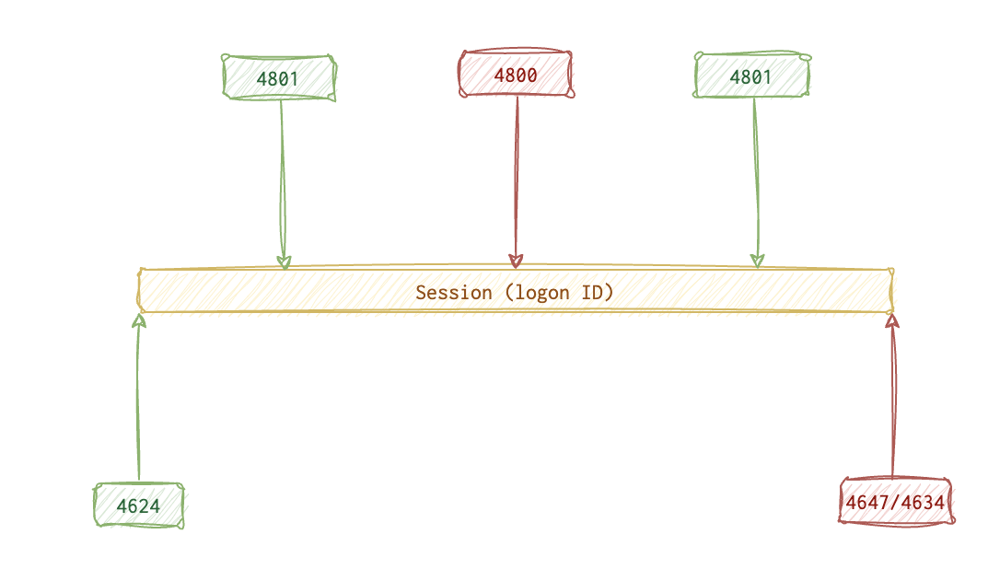

Windows
Event Logs
There is a fine line between logon and account logon events, and that line is not just one word. The main idea is that logon is the event on the system that wants to chat, whilst account logon is the event on the server/remote system that our computer wants to talk to: user authentication and logon from the Security trail. Event codes 4624.
Most events are logged on the target machine, but you can also see these events on the source machine. That happens when the user authenticates locally with the credentials from the SAM database (NTLM protocol); you will see EID 4776 (NTLM creds used for logon) for both successful and failed logons.
When the Kerberos protocol is in use, expect the following events in the logs:
4768(successful login)4771(failed login)4769(successful authentication to a resource server, aka service ticket granted)4776- pass-the-hash. To block/unblock the ability to use this for sensitive accounts,LocalAccountTokenFilterPolicy.
When the logon is failing, the following error codes are the most frequently used (NTLM 🗝️ and Kerberos 🐕🦺):
- 🗝️
C0000064(🐕🦺0x6) - the username provided is invalid (doesn’t exist). - 🗝️
C000006A(🐕🦺0x18) - the password provided is invalid. - 🗝️
C0000070(🐕🦺0xC) - unauthorised workstation. - 🗝️
C0000234(🐕🦺0x12) - account is locked. - 🗝️
C0000071(🐕🦺0x17) - the password has expired. - 🐕🦺
0x7- server was not found. - 🐕🦺
0x25- the time difference between the machines is too big.
👴🏼 XP: 672, 673, 675, 680, 529.
Sometimes, the credentials are different for different resources. When those credentials are different from the creds in memory, the credentials are provided explicitly. That is when EID 4624 (logon type 9) gets recorded. Most scripts and hacker tools REQUIRE explicit credentials, so that’s a good lead. Also, keep in mind that the following three user categories are those that require switching accounts and using credentials explicitly the most often:
- Admins
- Attackers
- Services
When UAC window pops up, it also triggers this event. RDP activity using different creds also generate event 4648 on both the originating and the target systems.
🛠️ CobalStrike tool has two modules: pth and make_token, both using explicit credentials. Hence, it triggers 4624 type 9 logon EID and 4648 (explicit creds); the latter records both the source AND the target.
Attempted logons and account usage.

The activity starts with 4624 (user logged in), optionally followed by 4801 (machine unlocked) and 4800 (unlocked) events until eventually it’s the session is dissolved by the 4647 (user initiated logoff) or 4634 (successful logoff) events.
🤷🏻♀️ - optional
4720 🤷🏻♀️ (account created) - 4776 (validate creds) - 4625 🤷🏻♀️ (failed login) - 4624 (normal successful login) - 4672 🤷🏻♀️ (admin login) - 4648 🤷🏻♀️ (explicit creds used, like when running 🛠️ runas 📚 docs) - 4647 (interactive logoff initiated) - 4634 🤷🏻♀️ (logoff event, not always consistent) - 4726 🤷🏻♀️ (account deleted).
📝
4624- successful logon. Successful login. Type2(console). Bear in mind that DWM (Desktop Win Manager) and UMFD (Font Driver Host) also use this Type 2 event. Filter it out (DWM|UMFD + RegEx + Exclude in Event Log Explorer filter). These are for domain accounts.
Using Logon ID you can link logon event to a logoff event and check the session duration.